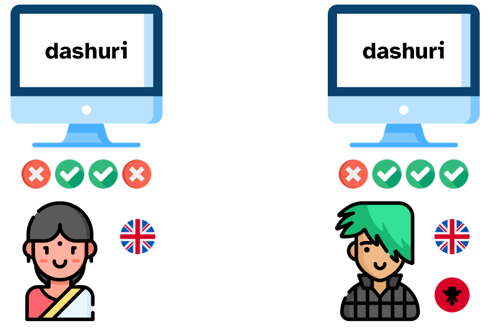

Frequentist statistics and p-values
1 Introduction
The frequentist approach to probabilities has dominated the field of applied statistics for about a century. Researchers are usually taught frequentist statistics and the majority of studies employs frequentist statistics. This is the framework that generates p-values.
Alas, it is now known that there is a lot of misunderstanding around the real meaning of p-values and around what frequentist statistics can do for researchers (Cassidy et al. 2019; Gigerenzer 2004; John, Loewenstein, and Prelec 2012; Flake and Fried 2020; Bochynska et al. 2023). This post tries to shed light on these issues and prepare you so that you can read the literature that uses frequentist statistics without been led astray by the common misinterpretations.
2 What is a p-value?

Let’s imagine we are interested in knowing if being a bilingual speaker has a facilitating effect in a memory task. We run a study with monolingual and bilingual participants in which they have to perform a memory task and we note their accuracy in recall. 0% accuracy means they got all the trials wrong and 100% accuracy means they got all trials right.
We want to compare the average accuracy of the monolingual and bilingual group of participants. Specifically, our (quite vague) hypothesis is that the accuracy of the monolingual group should be lower than that of the bilingual group. We decide to take a frequentist approach to assess this hypothesis.
First we assume that the following hypothesis, called the null hypothesis, is true.
Let’s say we found that the average accuracy of monolinguals is 80% and that of bilinguals is 85%. The difference in accuracy between the two groups is 5 percent points.
Now we need to calculate the probability of finding a difference that is 5 percent points (i.e. the difference we found) or larger, given that the null hypothesis is true (i.e. given that in the real world there is no difference in accuracy between the two groups).
To calculate that probability, we run a statistical significance test and that gives us a p-value of 0.025.
This means there is a 2.5% probability that, even if in the real world there is no difference in accuracy between the two groups, we could find a difference of 5 percentage points or bigger.
So in the world in which there is no difference between groups, there is a quite low probability (2.5%) of finding a difference that is that big or bigger. Usually, we set a threshold below which we decide to take the risk of rejecting the null hypothesis: in social sciences, this is usually 0.05 (i.e. 5%). p-values that are below the threshold are said to be statistically significant. Those who are not below the threshold are said to be non-significant (please, don’t say “insignificant”).
Since the p-value we got, 0.025, is below the threshold of 0.05, we take the risk of rejecting the null hypothesis and we declare that the results are statistically significant.
Note that rejecting the null hypothesis does not mean we can accept the alternative hypothesis that there is a difference between the two groups. We did find a difference between the two groups, that’s 5 percentage points. But the only thing that frequentist statistics can tell us is whether we can take the risk or not of rejecting the null hypothesis.
(Classical) frequentist statistics, the Null Hypothesis Significance Testing approach, cannot corroborate the null hypothesis nor the alternative hypothesis. It only tells us if we can risk rejecting the null or not. Even if a difference between two groups is significant, that does not mean we have evidence for a difference. The only evidence we can get from frequentist statistics is for rejecting the null hypothesis (not even accepting it).
3 Statistical significance is not theoretically significant
But why does a p-value not tell us if the results we got are true? That’s because of the type of probability a p-value is: p-values are conditional probabilities.
We could write this in mathematical notation as \(P(d|h)\), the probability of the data \(d\) (the difference we got), given \(h\) (the hypothesis that the difference is 0).
More often than not, we are actually intestered in a different probability, \(P(h|d)\): the probability of our hypothesis \(h\) (this does not have to be null) given the data we obtained (our results).
With non-conditional probabilities, like a coin toss, if the probability of head is \(p = 0.8\), then you know that the probability of tail is \(q = 1 - 0.8 = 0.2\). Alas, while \(q = 1 - p\), \(P(h|d)\) is not equal to \(1 - P(d|h)\) (nor \(P(h)\) for that mattter), that’s why a p-value does not tell you the probability of the hypothesis given the data nor the probability of the hypothesis.
Frequently, researchers interpret a significant result as evidence for the existence of a difference between groups but that is a mistake. You should be very careful when reading discussion sections in papers: you will very commonly find misinterpretations like this one.
Statistical significance is not theoretically meaningful because of the real nature of p-values. Moreover, statistical significance is binary: a result either is significant or not. There are no “almost significant” results or results “approaching significance”. Yet, these and similar wordings are very common in the literature.